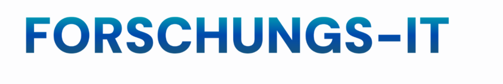

Wir stellen zentrale Analyse- und Kollaborationswerkzeuge bereit, die Sie in Ihrer täglichen Forschungsarbeit effizient unterstützen. Die Softwarebereitstellung wird zukünftig über ein zentrales Software-Center erfolgen. Als zusätzliches Filesharingsystem werden wir die Nextcloud einführen.
Auswahl essenzieller Anwendungen für Dokumentation, Kommunikation und Basis-Analyse.
Erweiterte Software für Forschungsvorhaben, Lizenzmanagement über Niclas Seuser.
Sicherer Austausch und gemeinsame Bearbeitung von Forschungsdaten.